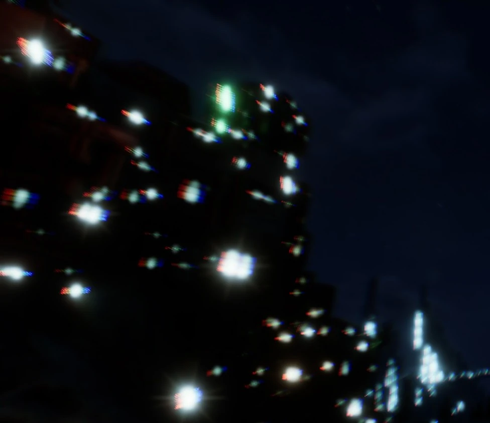
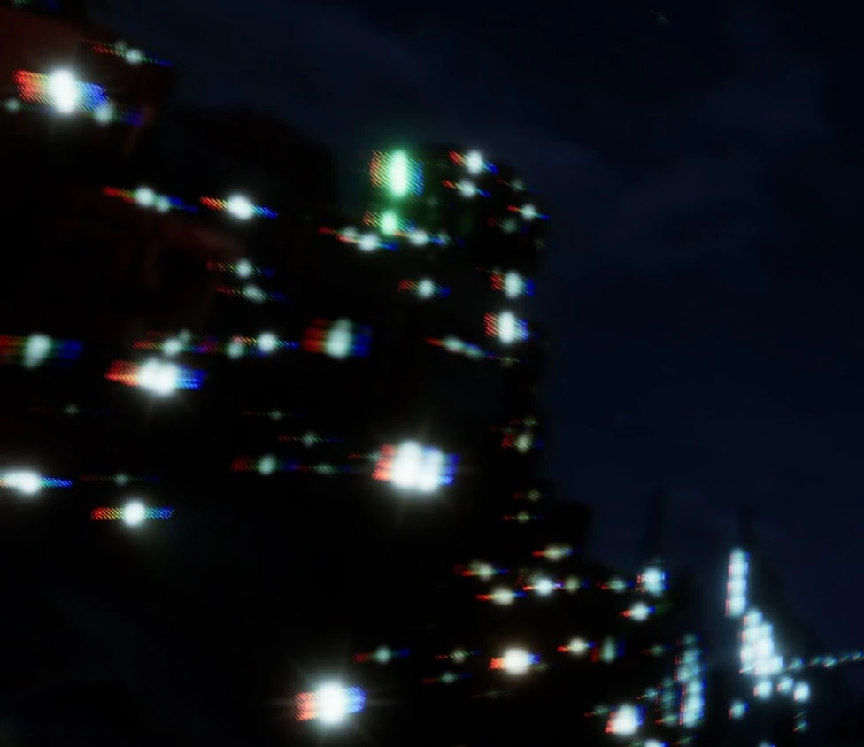

Effects
Chromatic aberration
Chromatic aberration is colored fringing you see near the edges of a photo. A real lens bends each color of light by a slightly different amount. So red, green and blue don't land in exactly the same place. You get thin colored edges around bright high-contrast things and they get stronger toward the corners.
HLSLens recreates that with a lot more control over the look. You can also limit the effect to a distance range so only the background fringes.
Bloom and halation are added from a separate texture, so the glow itself doesn't get a fringe. Bright lights fringe at their real brightness.
- Where to find it
- The Chromatic aberration category on the volume
- Default
- Off. Raise Chroma Intensity above 0 to turn it on.
- Cost
- Basic is cheap. Spectral costs a bit more, and depth masking adds a small extra pass.
Basic and Spectral
Spectral is the default and it's HLSLens' own mode. The colors blend into smooth, continuous fringes, more like a smear than three exact copies of the image. The stronger the fringe, the more it's spread out, so strong aberration also looks softer. It looks a lot closer to a realistic lens.
Basic is the engine's familiar aberration. Red and blue are pushed apart and green stays where it is, so you get sharp, separate color edges. It's the cheapest option.

Settings
| Setting | What it does | Default | Range |
|---|---|---|---|
| Chroma Mode | Spectral or Basic. | Spectral | — |
| Chroma Intensity | How far the colors are pushed apart. 0 is off. Negative values swap the fringe colors. |
0 | −10 to 10 |
| Chroma Fringe Balance | Which colors the fringe has. 0 is red and blue, 0.5 red and cyan, 1 purple and green. |
0 | 0 to 1 |
| Distance Falloff Exponent | How the fringe grows from the center toward the corners. 1 grows evenly, like a real lens. Higher values keep the center clean longer and push the effect out to the edges. |
2 | 1 to 4 |
| Chroma Anamorphic Ratio | Stretches the fringes. Above 1 gives stronger horizontal fringes, below 1 stronger vertical ones. |
1 | 0.5 to 2 |
The center of the screen always stays clean, the effect fades out right around it.


Depth masking
You can limit the effect to a distance range from the camera, so for example only the background gets fringing and the foreground stays clean. Turn on Use Depth in the Chroma Depth group. It only costs a little.
| Setting | What it does | Default | Range |
|---|---|---|---|
| Use Depth | Turns depth masking on. | Off | — |
| Start Depth | Where the effect starts fading in, in meters. Everything closer is untouched. | 8 | 0 to 2000 |
| Depth Range | How many meters past Start Depth it takes to reach full strength. Small values give a sharp line, large values a long fade. | 15 | 1 to 2000 |
| Depth Max Distance | Distance in meters where the effect fades out again. 0 means no far limit. |
0 | 0 to 15000 |
With the defaults, the fringe starts at 8 meters and is at full strength from 23 meters on.